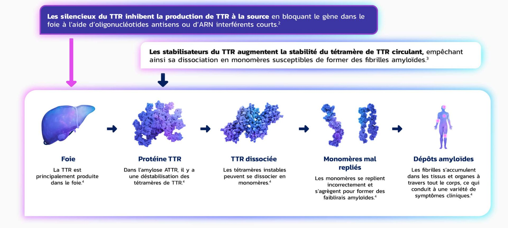
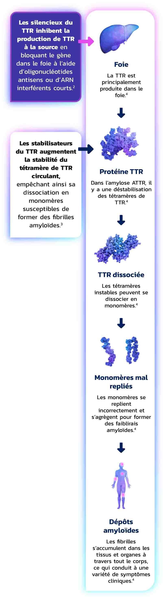

Ces contenus sont exclusivement destinés aux professionnels de la santé en Suisse. AstraZeneca Suisse©
-
Amylose à transthyrétine (ATTR-CM) -
À propos de l’ATTR -
Symptômes de l’ATTR -
Diagnostic de l’ATTR -
Traitement
L’amylose ATTR peut être traitée avec des thérapies ciblées1
La compréhension des causes de la maladie a conduit au développement de deux mécanismes distincts permettant d’intervenir dans le cycle pathogène de l’amyloïde


La recherche sur l’amylose ATTR continue de progresser – un consensus d’expert·e·s recommande une prise en charge précoce afin d’améliorer la qualité de vie des patient·e·s.1
Une action rapide est essentielle7
See the PATTRNS
Suspicion
Identifiez les symptômes de l’amylose ATTR – y compris ceux des phénotypes mixtes.5
Diagnostic
Un diagnostic précoce permet une intervention rapide pour améliorer la qualité de vie.*†5
Traitement
Orientez les patient·e·s diagnostiqué·e·s vers l’un des deux centres suisses d’excellence ATTR désignés (CHUV & USZ) pour l’initiation du traitement.‡§6
*Pour l’ATTR-PN: test génétique en cabinet médical.6
†Pour l’ATTR-CM: hôpitaux de catégorie A (voir SAN Guidelines).6
‡Pour l’ATTR-CM: hôpitaux de catégorie A (voir SAN Guidelines).6
§Pour l’ATTR-CM: hôpitaux de catégorie A (voir SAN Guidelines).6
Vous avez des questions ?
Nous sommes à votre disposition.
CHUV: Centre hospitalier universitaire vaudois; RNA: Acide ribonucléique; SAN : Swiss Amyloidosis Network; TTR: Transthyrétine; USZ: Universitätsspital Zürich.
Références:
- Kittleson, M.M., et al., 2023 ACC Expert Consensus Decision Pathway on comprehensive multidisciplinary care for the patient with cardiac amyloidosis: a report of the American College of Cardiology Solution Set Oversight Committee. J Am Coll Cardiol, 2023. 81(11): p. 1076–1126.
- Tschöpe, C., Elsanhoury, A., Treatment of transthyretin amyloid cardiomyopathy: the current options, the future, and the challenges. J Clin Med, 2022. 11(8): p. 2148.
- Planté-Bordeneuve, V., Said, G., Familial amyloid polyneuropathy. Lancet Neurol, 2011. 10(12): p. 1086–1097.
- Carroll, A., et al., Novel approaches to diagnosis and management of hereditary transthyretin amyloidosis. J Neurol Neurosurg Psychiatry, 2022. 93(6): p. 668-678.
- Nativi-Nicolau, J.N., et al., Screening for ATTR amyloidosis in the clinic: overlapping disorders, misdiagnosis, and multiorgan awareness. Heart Fail Rev, 2022. 27(3): p. 785–793.
- Condoluci, A., et al., Management of transthyretin amyloidosis: Guidelines from the 1st Swiss Amyloidosis Network (SAN) Consensus conference. Swiss Med Wkly [Internet], 2021 Oct, 20.
CH-10981_03/2025 | Date de création: mars 2025